Anglais · 2nde and 1re of the baccalauréat professionnel
American Superheroes: images of a nation
Six short lessons, built around genuine public-domain Golden Age comic pages. Description first. Two levels: A2/B1 in 2nde, B1 in 1re.
Anglais · 2nde and 1re of the baccalauréat professionnel
Six short lessons, built around genuine public-domain Golden Age comic pages. Description first. Two levels: A2/B1 in 2nde, B1 in 1re.
Without JavaScript, every lesson is on this page, one after another. The tabs above jump to each lesson.
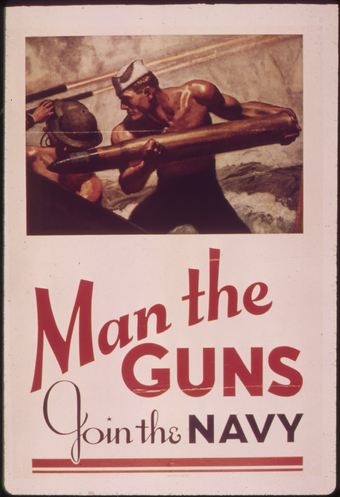
| Rubrique | Contenu |
|---|---|
| Title | American Superheroes: images of a nation |
| Level | 2nde (A2/B1) and 1re (B1), baccalauréat professionnel |
| Thématique | Grands événements historiques; grandes œuvres; médias; personnalités (BO spécial n° 5, 11 April 2019) |
| Duration | Six lessons of 55 minutes, timed on 52 |
| Method | Spirale de Gorse, six turns |
| Final task | Lesson 6: a careful description and a two-minute oral, towards the CCF at class level |
These are the five official activities of the Bulletin officiel for langues vivantes in the baccalauréat professionnel.
Six turns. The French name of the method is kept. Méthode de la spirale de Gorse conçue par Madame Carole Paoli Pompougnac.
The tip. When a society tells its story through images of invincible heroes, what happens to ordinary courage, to the enemy it invents, and to those it leaves out of the picture?
Look first. Do not interpret yet. This is a real comic page from 1945. We may print it because it is in the public domain.
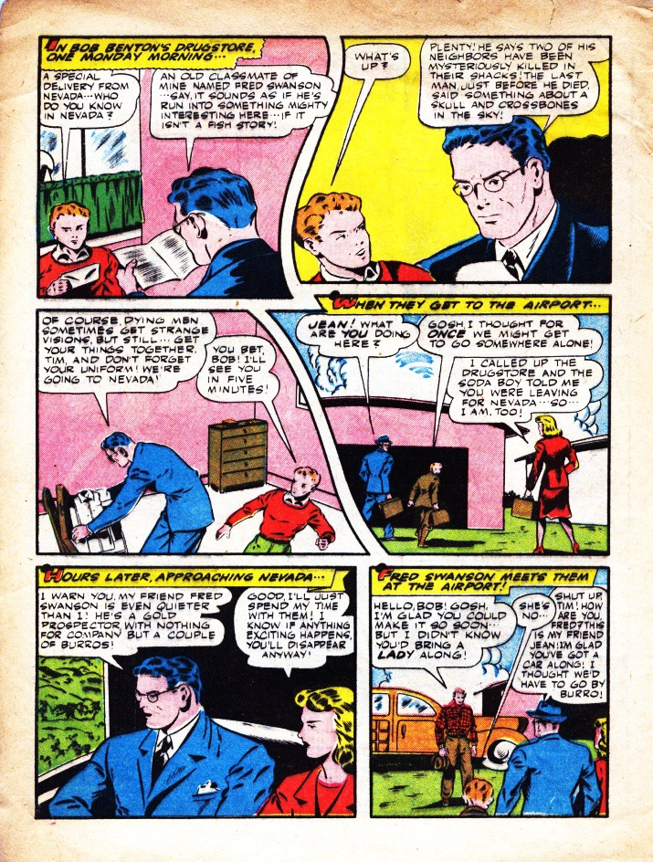
These are crops from the same 1945 page, not drawings.
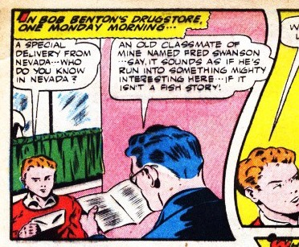
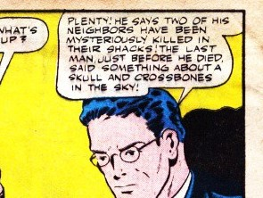
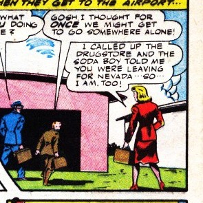
| Word | Meaning |
|---|---|
| panel (or frame) | one picture on the page, in a box |
| gutter | the space between two panels |
| speech balloon | what a character says |
| caption | a box of narration (often yellow here) |
| reading path | the order we read: usually left to right, then down |
| in the first panel / on the left / on the right | prepositions of place |
A. How many panels do you count? Number them along the reading path.
B. Find a gutter, a speech balloon, a caption. Say where each one is.
C. Listen. The teacher reads one balloon, or one caption. Point to it on the page. Say what you heard.
C. Complete: In the first panel, on the left, I can see... The boy in the red shirt is... A woman in a red coat is... The caption at the top says...
2nde. Six short sentences, with four prepositions and three words from the table. 1re. Eight sentences, then: This page cannot prove...
Sentence starters. In the first panel... / On the right... / Between the two panels (in the gutter)... / The balloon in the top right says...
Homework. Five sentences about this page. Do not search for a Marvel or DC image.
Two more real pages from the same issue. Describe the movement.
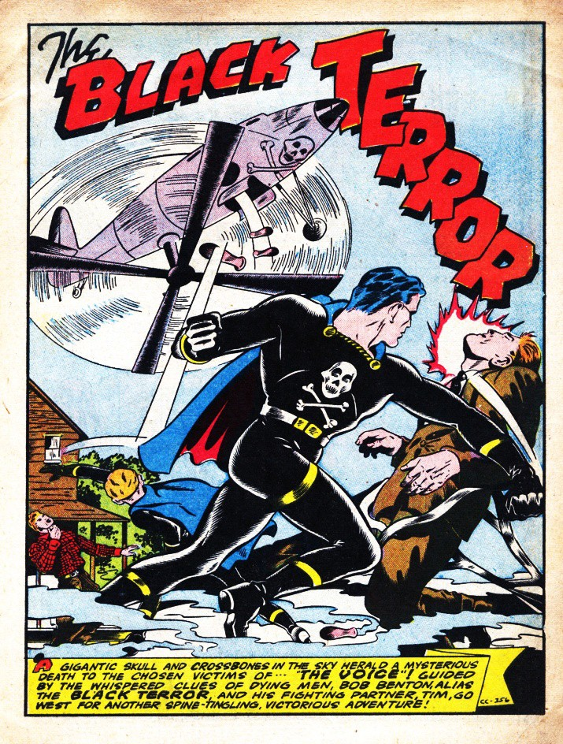
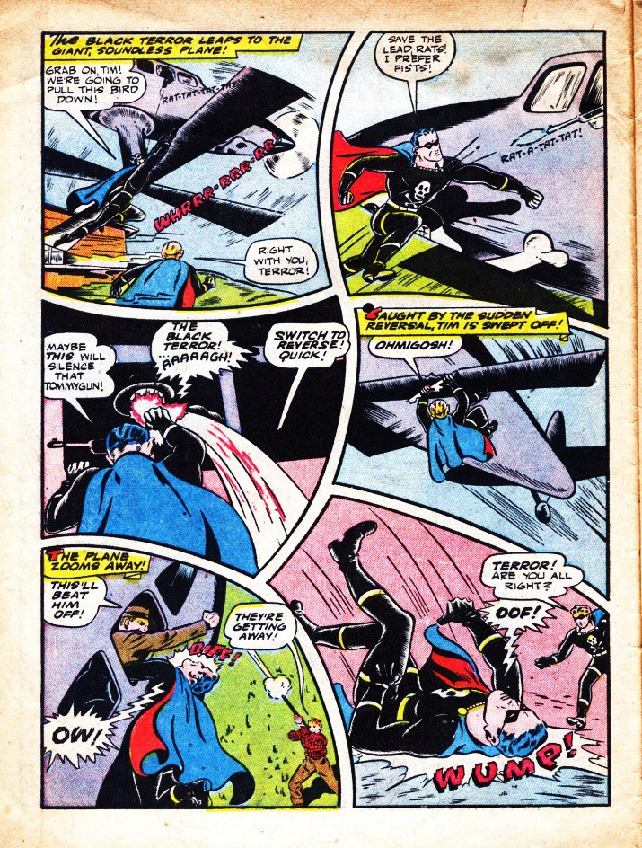
Crops from page 6 of the same issue. No drawings.
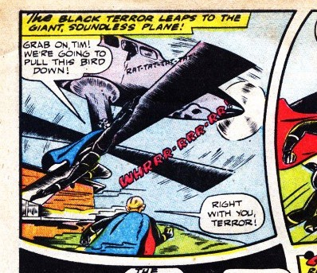
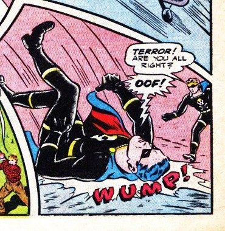
| Word | Meaning | On these pages |
|---|---|---|
| splash page | a page with one large image | Page 3 is a splash. |
| motion lines | lines that show speed | Around the propeller; around the plane. |
| onomatopoeia | a sound written as a word | WUMP!, OOF!, OW!, RAT-A-TAT-TAT, WHIRRR |
| to leap / to fall / to zoom / to punch | verbs of movement | The hero leaps. A body is falling. |
| diagonally | in a slanted line | A body falls diagonally across the panel. |
| dynamic / static | full of movement / still | Page 6 looks dynamic. |
A. The splash. Where is the plane? Where is the hero? What is he doing? What are the circular lines around the propeller?
B. Page 6. Find at least four onomatopoeias. For each, say where it is and what sound it gives. Find a body in the air.
C. Five sentences in the present continuous: The hero is leaping... The plane is zooming... A man is falling...
2nde. Eight short sentences. 1re. Ten sentences, then: The page looks dynamic because...
Homework. Six sentences: three with an onomatopoeia and a preposition, three with a verb of movement.
A real comic from July 1941. We may print it. It is Lev Gleason’s Daredevil (1941), not Marvel’s Daredevil. The United States entered the Second World War in December 1941. This comic appeared before that.
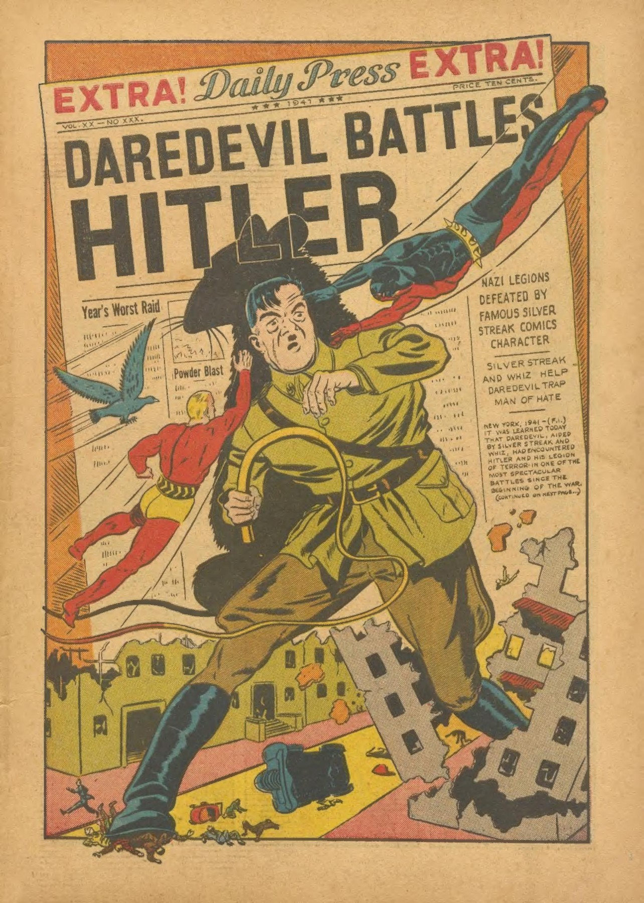
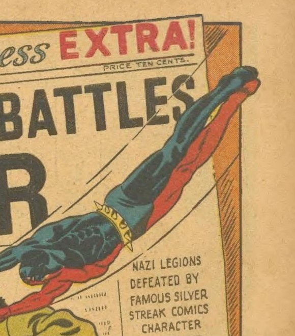
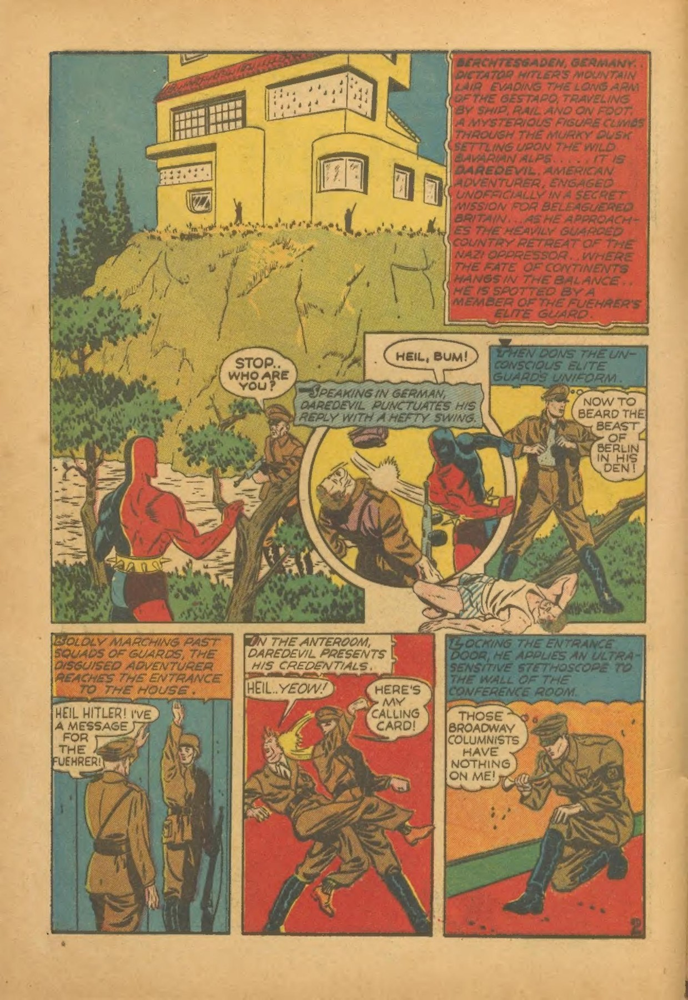
| Date | Fact |
|---|---|
| June 1938 | Superman first appears in Action Comics no. 1. The cover is protected. We do not print it. |
| March 1941 | Captain America first appears. The cover (a punch at Hitler) is protected. We do not print it. We describe it only. |
| July 1941 | This comic: Daredevil Comics no. 1. We may print it. |
| December 1941 | The United States enters the war. Wonder Woman appears in All Star Comics no. 8. |
A. The splash. What is in the centre? Who is in the air, and where? What words are at the top? Use prepositions and a verb of movement.
B. The panel page. In the large panel: where is the house? Where is the red figure? Follow the reading path down to the three small panels.
C. F, I or U? (1) This comic appeared in July 1941, before the United States entered the war. (2) Every American wanted this hero to punch the enemy. (3) The splash may want the reader to see a clear enemy and a fast, powerful hero. Answers, in the correction sheet: 1 F; 2 U; 3 I.
2nde. Eight sentences: description, then one may and one cannot prove. 1re. About 120 words. What enemy does this page invent? What does it not show?
Homework. The four dates, each with one fact. Two sentences about the splash.
A. Colour. Look again at a Black Terror page from Lesson 1 or 2. Name the main colours, and where they are. Do not jump to a symbol. Then: The yellow captions may... but I cannot reduce the whole page to one colour meaning, because...
Roy Lichtenstein, Drowning Girl, 1963. The Museum of Modern Art, New York, object number 80249. The work is still protected. Madame Carole Paoli Pompougnac has asked the Estate for permission and is awaiting a reply.
Open the official page and describe what you see there: https://www.moma.org/collection/works/80249
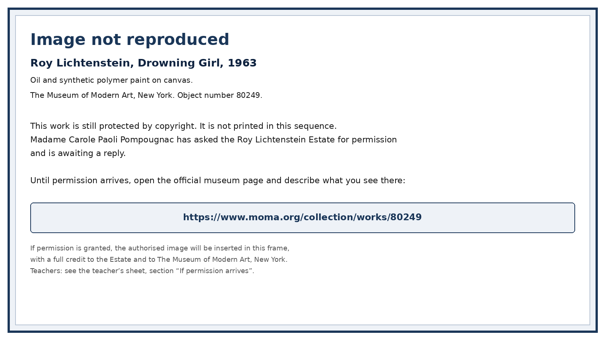
Write: title, date, museum, 80249. Then six short sentences (who, how much of the body, posture, water, words if you see a balloon, colours and dots). Then: This may... It is close to a comic panel because... It is no longer a comic page because...
C. Who is left out? On the 1941 and 1945 pages, who is visible? Who is not? Four careful sentences, with may. No slogan. 2nde: tasks A and B. 1re: A, B and C.
Homework. A museum label of 8 lines, with the MoMA link.
A short, serious game. Teams of three or four. If you miss a clue, ask for a hint; you can still finish. Restore accurate labels. Do not mislead the visitor.
Look at The Black Terror no. 11, page 4 (Lesson 1). How many panels? What is in the gutter? What is in the first caption? The code is the number of panels.
A visitor has written: “This is the 1938 Superman cover, a Marvel still from 2011, in the public domain. Lev Gleason’s Daredevil is the same character as Marvel’s Daredevil.” Rewrite a correct label for Daredevil Comics no. 1, July 1941. The code word is the month of publication, in English, in lower case.
On The Black Terror no. 11, page 6, find three onomatopoeias. For each, write the word and where it is. The code is the onomatopoeia in the bottom right.
Choose the careful option, or rewrite it carefully:
Write six to eight lines. Use two dates and four terms from the vocabulary. Solutions are on the correction sheet. Homework. Eight lines: what you can now describe; one date; one protected work you will not copy.
This hour trains towards the CCF (Situation A and Situation B) at class level. It is not the official examination.
1. Describe. The teacher gives you one printed page from this sequence. Write a full description: panels or splash, reading path, places, movement, balloons, captions, onomatopoeia, colour.
2. A careful reading. What may this page want the reader to feel? Use may. Then two things it cannot prove.
3. The guiding question. What do American superheroes reveal about the United States, its fears, its ideals and the images it makes of itself? End at the tip of the spiral: ordinary courage, the enemy a society invents, those it leaves out.
2nde (A2/B1). About 140-180 words. At least two dates. 1re (B1). About 180-220 words. At least three dates. A last short paragraph on one path: existential, political, or civilisational.
4. Short oral (about two minutes). Choose one printed page. Describe it. Then: This may reveal... It cannot prove...
Sentence starters. I am going to describe a public-domain page from... / In the first panel / On this splash... / The hero is (verb+ing)... / This may... / I would not say “every American”, because...
Self-correction (after the work comes back). What went wrong: ... My improved sentence: ... One word I now use more precisely: ...
Four documents, each in PDF, Word and LibreOffice. You may use and adapt these documents, with credit to their author, without commercial use, and share your versions under the same conditions. CC BY-NC-SA 4.0.
McClelland Barclay, Man the Guns, Join the Navy, 1942, United States Navy recruiting poster. National Archives (NARA) 513519; Library of Congress, Prints and Photographs Division, reproduction number LC-USZC4-2009. Public domain (United States government work). Image via Wikimedia Commons.
The Black Terror no. 11, August 1945, Nedor / Better Publications, art by Ed Moritz: pages 3, 4 and 6. Public domain (United States, 1945; copyright not renewed). Wikimedia Commons.
Daredevil Comics no. 1, July 1941, Lev Gleason / Your Guide Publications: splash and an interior page. Public domain (United States, 1941; copyright not renewed). Internet Archive and Wikimedia Commons. Not Marvel’s Daredevil. The original cover is not reprinted (racist caricature of the Claw).
Madame Carole Paoli Pompougnac
conçu par Madame Carole Paoli Pompougnac, mis en page par Grok. Comic pages: public domain, full credits above and in the documents. Méthode de la spirale de Gorse conçue par Madame Carole Paoli Pompougnac.